library(rRACES)Synopsis. To simulate a tissue the following steps are required:
creation of a tissue;
introduction of cells in the tissue;
actual simulation.
The simulation is managed by an object of the S4 class
Simulation, wich allows to program the tissue evolution
over time, adding new cells as far as the simulation progresses. The
state of the simulation and tissue can be visualised using
ggplot-powered plots.
Tissue specification
To perform a simulation a new object of class Simulation
must be created.
# Default constructor
sim <- new(Simulation)This automatically builds a 1000x1000-cells tissue - which can host
\(1\) milion cells - and sets the name
of the simulation to be
races_<date>_<hour>.
A simulation custom name can be specified as it follows.
# Call your simulation "Test"
sim <- new(Simulation, "Test")In order to save the simulation progresses in the disk and recover it
in the future, use the optional Boolean parameter
save_snapshots. By setting save_snapshots to
TRUE, the simulation progresses will be saved in a
directory whose name is the name of the simulation.
# The progresses of the simulation will saved in the "Test" folder.
# If the directory "Test" already exists an exception is raised.
sim <- new(Simulation, "Test", save_snapshots = TRUE)Class Simulation exports a show method to
get information on the current object.
sim
#> ── rRACES D S M Test ──────────────────── ▣ A tissue [1000x1000] ⏱ 0 ──
#> ✖ The simulation has no species yet!
#> ✖ The simulation has no samples yet!The sim object exposes also methods to get information
about the simulation and control it.
# Get the simulation directory, i.e., "Test"
sim$get_name()
#> [1] "Test"
# Get the tissue size, i.e., c(1000,1000)
sim$get_tissue_size()
#> [1] 1000 1000Custom tissue. We can change the tissue size and label it with a name that might appear in some plots.
# Set the tissue name and size to different values
sim$update_tissue("Liver", 1200, 900)
# Get the tissue name, i.e., "Liver"
sim$get_tissue_name()
#> [1] "Liver"
# Get the tissue size, i.e., c(1200,900)
sim$get_tissue_size()
#> [1] 1200 900Species specification
In order to simulate the evolution of some species we need to add
them to sim. This process defines the evolutionary
parameters of the species.
A mutant is a set of cells having the same (potentially unknown) driver mutations. Cells in the same mutant can have different liveness rates due to different epigenetic states.
A species is a mutant with an optional epigenetic state. At
this point in the simulation the mutant is just a name (A,
B, ..) that at later stage could be linked to mutations of
interest. The epigenome is a binary feature of a species that is
represented by epistates +/- (positive and
negative status). This is an abstraction, and could represent an
active/inactive state linked to a promoter methylation or, more broadly,
a phenotype. The evolution of mutants is non-reversible (no-back
mutations model), while the evolution among epistates is potentially
reversible.
For example, if we define two mutants A and
B with their epistates +/-, we
have 4 distinct species: A+ and A-, as well as
B+ and B-.
Hybrid models can be obtained, e.g., a mutant A (with no
epistates), together with B+ and B-.
Evolutionary parameters
We use a notation common in linear birth-death processes. If a
species A has no epistates then its stochastic behaviour is
defined by the state-change rates
\[ \begin{align} \text{(growth)}\quad A & \rightarrow_{\lambda} 2 A \\ \text{(death)}\quad A & \rightarrow_{\delta} \emptyset \end{align} \]
where:
- \(\lambda>0\) is a growth rate for cells that duplicate;
- \(\delta>0\) is a death rate for cells that duplicate.
Instead, if the species has epistate + (denoted \(A_\oplus\)) and - (denoted
\(A_\ominus\)), then its stochastic
behaviour is defined by the state-change rates
\[ \begin{align} \text{(growth +)}\quad A_\oplus & \rightarrow_{\lambda_\oplus} 2 A_\oplus \\ \text{(death +)}\quad A_\oplus & \rightarrow_{\delta_\oplus} \emptyset \\ \text{(growth -)}\quad A_\ominus & \rightarrow_{\lambda_\ominus} 2 A_\ominus \\ \text{(death -)}\quad A_\ominus & \rightarrow_{\delta_\ominus} \emptyset \\ \text{(switch +-)}\quad A_\oplus & \rightarrow_{\epsilon_{+-}} A_\oplus + A_\ominus \\ \text{(switch -+)}\quad A_\ominus & \rightarrow_{\epsilon_{-+}} A_\ominus + A_\oplus \end{align} \]
where the rates \(\lambda\) and \(\delta\) are as above, and \(\epsilon_{+-}\) or \(\epsilon_{-+}\) are the ratesat which cells of a certain epistate duplicate and flip the epigenetic marker of one of the progeny.
sim$add_mutant(name = "A",
epigenetic_rates = c("+-" = 0.01, "-+" = 0.01),
growth_rates = c("+" = 0.2, "-" = 0.08),
death_rates = c("+" = 0.1, "-" = 0.01))
# updated object (counts refer to number of cells of each species)
sim
#> ── rRACES D S M Test ──────────────────────── ▣ Liver [1200x900] ⏱ 0 ──
#>
#> ── Species: 2, with epigenetics
#>
#> ======= ==== ==== ==== ====== ===
#> species λ δ ε counts %
#> ======= ==== ==== ==== ====== ===
#> A- 0.08 0.01 0.01 0 NaN
#> A+ 0.20 0.10 0.01 0 NaN
#> ======= ==== ==== ==== ====== ===
#>
#> ── Firings: 0 total
#> ✖ The simulation has no samples yet!
# Get the simulation species and their rates
sim$get_species()
#> mutant epistate growth_rate death_rate switch_rate
#> 1 A - 0.08 0.01 0.01
#> 2 A + 0.20 0.10 0.01A mutant without epistates could be added as
# Not run
sim$add_mutant(name = "A", growth_rates = 0.2, death_rates = 0.1)To be able to simulate the model, an initial cell needs to be displaced in the tissue.
# We add one cell of species A+ (mutant A in epistate +) in
# position (500, 500).
sim$place_cell("A+", 500, 500)Visualisations
We can query the current state of the simulation, and extract the position of each cell in the tissue
# Counts per species
sim$get_counts()
#> mutant epistate counts
#> 1 A - 0
#> 2 A + 1
# Cells position (one so far)
sim$get_cells()
#> cell_id mutant epistate position_x position_y
#> 1 0 A + 500 500These information can be plot. Note that the tissue visualisation uses hexagonal bins to avoid rastering delays when the simulation uses thousands of cells.
# Piechar for counts
plot_state(sim)
# Spatial distribution for the whole tissue (hexagonal bins)
plot_tissue(sim)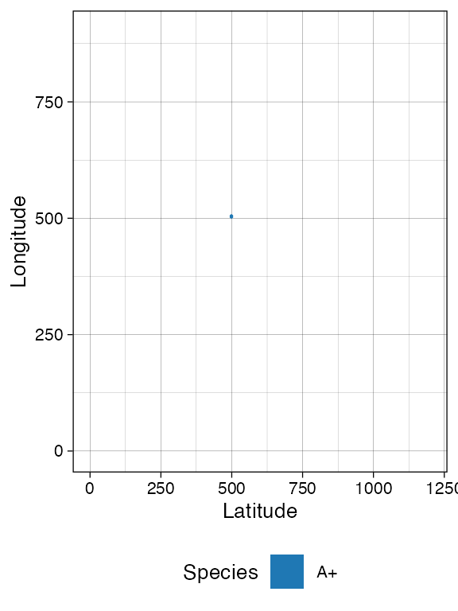
Note: since the plots are done with
ggplotthey can be assembled and customised.
Species evolution
There are 3 ways to let the simulation evolve:
- advancing until the number of cells in a species reaches a given threshold \(\theta > 0\);
- advancing until a new time \(t>0\) is reached;
- advancing until a desired number of firings (of one particular event) has occurred.
Size-based simulation
We can run the simulation up to when we have \(\theta > 0\); cells of species
A+
# Counts per species is now 0
sim$get_counts()
#> mutant epistate counts
#> 1 A - 0
#> 2 A + 1
sim$run_up_to_size("A+", 500)
# Counts per species now reports 500 for A+
sim$get_counts()
#> mutant epistate counts
#> 1 A - 123
#> 2 A + 500
plot_tissue(sim)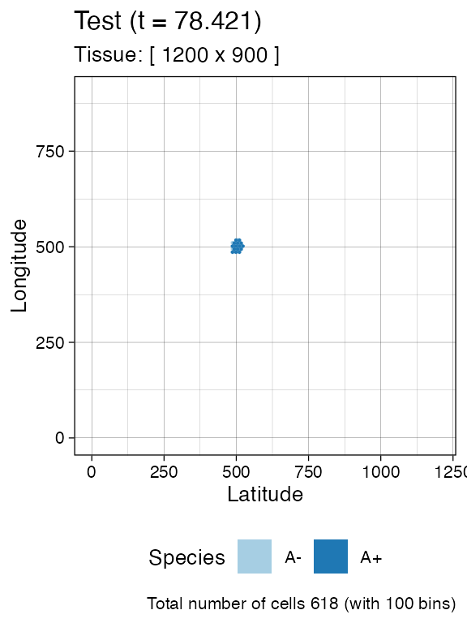
Firing-based simulation
The number of times each event has fired is accessible
# Get the number of fired event per species
sim$get_firings()
#> event mutant epistate fired
#> 1 death A - 8
#> 2 growth A - 87
#> 3 switch A - 8
#> 4 death A + 366
#> 5 growth A + 909
#> 6 switch A + 52A small number of cell deaths have occurred in species
A- up to this point, so we can simulate the system until
there are 100 of them.
sim$run_up_to_event("death", "A-", 100)
# The row "death", for "A" "-" now reports 100
sim$get_firings()
#> event mutant epistate fired
#> 1 death A - 100
#> 2 growth A - 893
#> 3 switch A - 98
#> 4 death A + 3456
#> 5 growth A + 7354
#> 6 switch A + 387
# Plot the tissue by using 200 bins
plot_tissue(sim, num_of_bins = 200)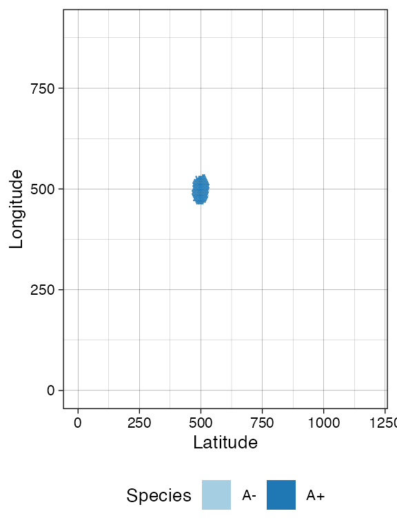
Clock-based simulation
It is also possible to take the current simulation clock as reference, and simulate further.
# Get the simulation clock
sim$get_clock()
#> [1] 64.19203
# Run the simulation for other 15 time units
sim$run_up_to_time(sim$get_clock() + 15)
# Get again the simulation clock
sim$get_clock()
#> [1] 79.19229
plot_tissue(sim)
Getting cells (Advanced)
At this point, if we query the simulation we will find more cells (we
use dplyr to process query results). For convenience, the
getters accept parameters to subset the tissue.
# load dplyr to use %>%
require(dplyr)
# Get the cells in the tissue at current simulation time
sim$get_cells() %>% head()
#> cell_id mutant epistate position_x position_y
#> 1 67347 A + 414 494
#> 2 68339 A + 414 511
#> 3 69151 A + 414 513
#> 4 58575 A - 415 489
#> 5 59347 A + 415 490
#> 6 78349 A + 415 493
# Get the cells in the tissue rectangular sample having
# [500,500] and [505,505] as lower and upper corners, respectively
sim$get_cells(c(500, 500), c(505, 505)) %>% head()
#> cell_id mutant epistate position_x position_y
#> 1 67854 A + 500 500
#> 2 52806 A - 500 501
#> 3 73034 A + 500 502
#> 4 62887 A - 500 503
#> 5 76969 A + 500 504
#> 6 76970 A + 500 505
# Get the cells in the tissue having epigenetic state "-"
sim$get_cells(c("A", "B"), c("-")) %>% head()
#> cell_id mutant epistate position_x position_y
#> 1 58575 A - 415 489
#> 2 49416 A - 416 490
#> 3 49152 A - 416 495
#> 4 67860 A - 416 498
#> 5 67859 A - 416 501
#> 6 41796 A - 417 480
# Get the cells in the tissue having epigenetic state "-" and,
# at the same time, belonging to rectangular sample bounded by
# [500,500] and [505,505] as lower and upper corners, respectively
sim$get_cells(c(500, 500), c(505, 505), c("A", "B"), c("-")) %>% head()
#> cell_id mutant epistate position_x position_y
#> 1 52806 A - 500 501
#> 2 62887 A - 500 503
#> 3 50493 A - 501 500
#> 4 44949 A - 501 502
#> 5 39455 A - 501 503
#> 6 50950 A - 501 505Evolving new species
rRACES can select cells from the tissue, randomly for every mutant, or in a constrained tissue area.
# Stochastic sampling from the whole tissue: it can return A+ or A-
sim$choose_cell_in("A")
#> cell_id mutant epistate position_x position_y
#> 1 59145 A + 498 444
# Calling it again may result in a different cell
sim$choose_cell_in("A")
#> cell_id mutant epistate position_x position_y
#> 1 59135 A + 416 516
# Constrain sampling in the tissue rectangular selection [500,550]x[350,450]
sim$choose_cell_in("A", c(500, 350), c(550, 450))
#> cell_id mutant epistate position_x position_y
#> 1 78569 A + 531 445This feature can be used to program the generation of new species, mimicking new mutants that generate subclonal expansions.
Imagine we want to add a new mutant B with epistates –
and therefore new species B+ and B- - as
descending from A,we need to:
locate one cell of mutant
Ain the tissue, which is where we will inject the new mutant;add the specifics of mutant
B(viaadd_mutant, as we did forA);implement the change of the cell of mutant
Ato a cell of mutantB.
# We locate a random cell
cell <- sim$choose_cell_in("A")
cell
#> cell_id mutant epistate position_x position_y
#> 1 38877 A - 440 507
# Add mutant
sim$add_mutant(name = "B",
epigenetic_rates = c("+-" = 0.05, "-+" = 0.05),
growth_rates = c("+" = 0.3, "-" = 0.3),
death_rates = c("+" = 0.05, "-" = 0.1))Then we inject the cell, and simulate a little bit.
# Mutant injection
sim$mutate_progeny(cell, "B")
# Generated event A -> B either in + or - epistates is now recorded
sim$get_counts()
#> mutant epistate counts
#> 1 A - 5095
#> 2 A + 17315
#> 3 B - 1
#> 4 B + 0
# New evolution
sim$run_up_to_size("B+", 600)At this point, we can inspect in more details the tissue. It can help to facet on the species to clearly appreciate the spatial diffusion of the populations.
plot_state(sim)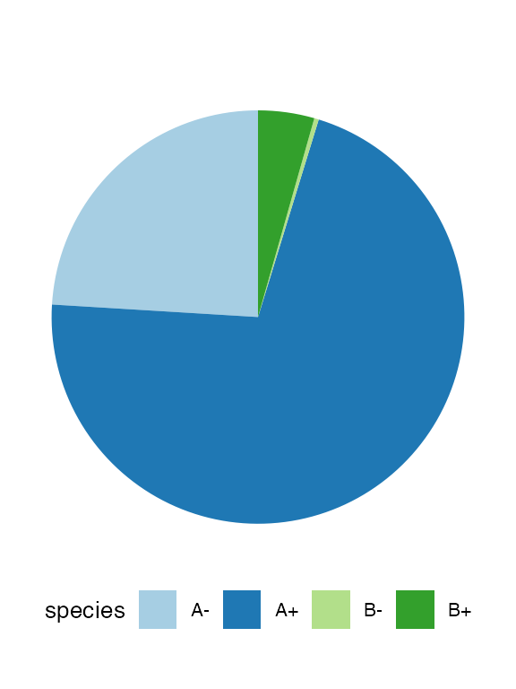
plot_tissue(sim, num_of_bins = 250)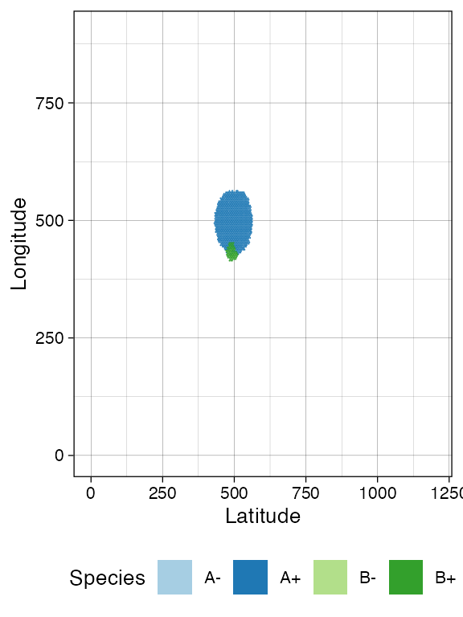
# Facet on species via ggplot
library(ggplot2)
plot_tissue(sim, num_of_bins = 250) + facet_wrap(~species)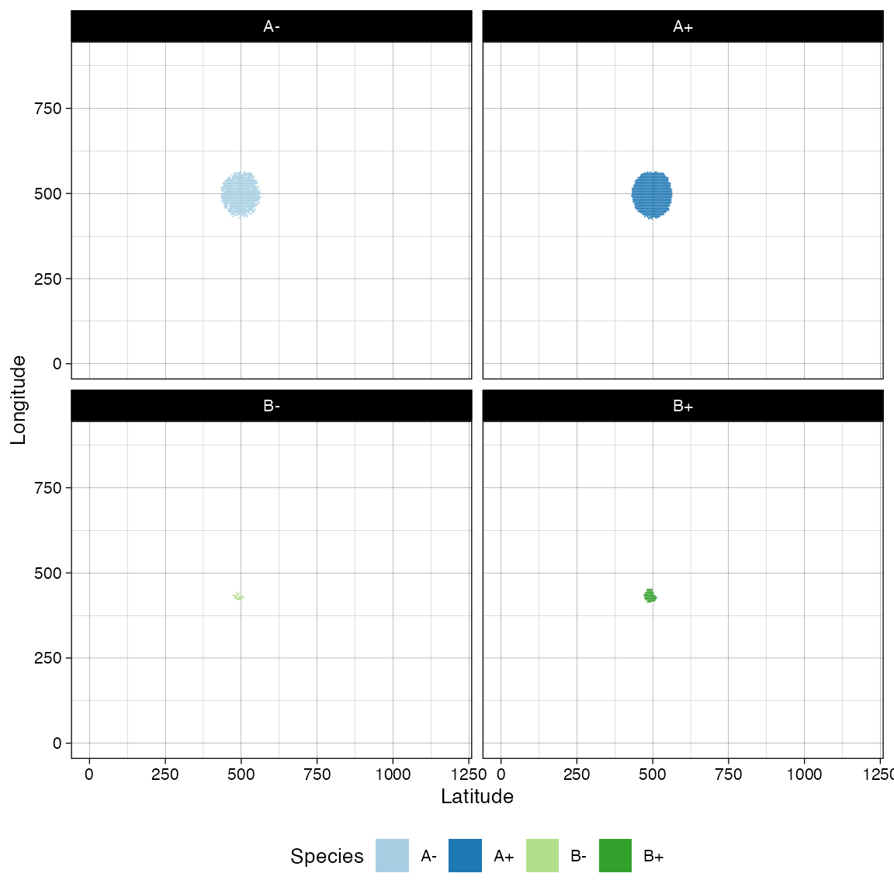
If, at this point in the simulation, we generate a new mutant
C from A in the rectangle \([450,500]\times [550, 600]\).
# Define evolutionary parameters
sim$add_mutant(name = "C",
epigenetic_rates = c("+-" = 0.1, "-+" = 0.1),
growth_rates = c("+" = 0.2, "-" = 0.4),
death_rates = c("+" = 0.1, "-" = 0.01))
# Choose and mutate
sim$mutate_progeny(sim$choose_cell_in("A", c(450, 550), c(500, 600)), "C")
sim$run_up_to_time(sim$get_clock() + 7)
plot_state(sim)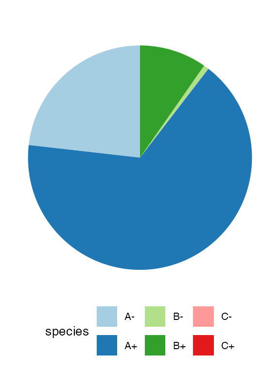
plot_tissue(sim, num_of_bins = 250)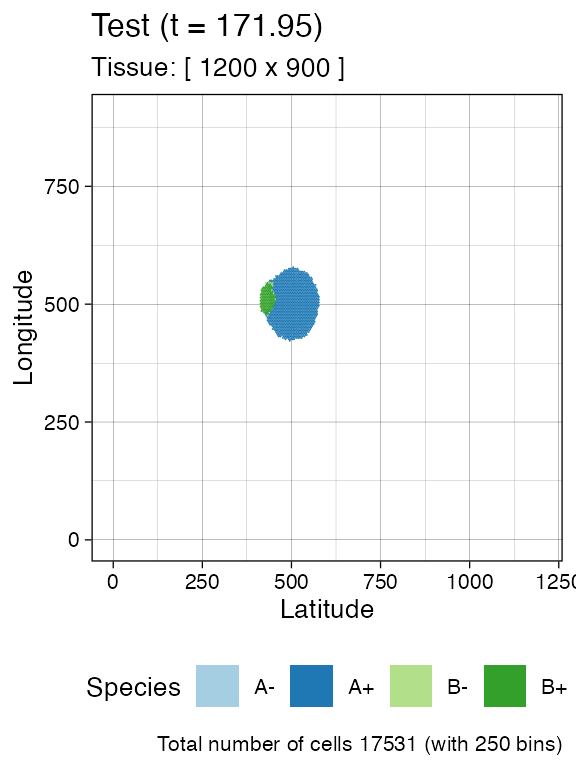
Other operations
Injection of cells over a tissue
On the tissue, we can inject multiple cells manually; all injected cells can be retrieved.
# Now it will return just the initial cell
sim$get_added_cells()
#> mutant epistate position_x position_y time
#> 1 A + 500 500 0Avoiding drift
Any species that has a non-zero death rate can become extinct stochastically by drift.
Drift makes it difficult to simulate an be confident of what species are in the model. To facilitate the user, RACES can avoid drift by setting a death activation level. This value is the minimum number of cells that enables cell death in a species: a cell of species \(S\) can die if and only if \(S\) has reached the death activation level at least once during the simulation.
This threshold holds for all the species and it is set to 1 by default.
sim$death_activation_level
#> [1] 50
# Change death activation level
sim$death_activation_level <- 50Time series data
It is convenient sometimes to plot a time series of a simulation, reporting species or firing counts over time. Since rRACES is programmable, it is immediate to make a for-loop algorithm and collect the simulation data over time.
Default history-based data
However, this is not required because at the end of any
run_to_* methods, RACES stores the data about the number of
species cells, and that of event firings. These data can be
extracted.
# The firings
sim$get_firing_history() %>% head()
#> event mutant epistate fired time
#> 1 death A - 8 44.46369
#> 2 growth A - 87 44.46369
#> 3 switch A - 8 44.46369
#> 4 death A + 366 44.46369
#> 5 growth A + 909 44.46369
#> 6 switch A + 52 44.46369
# For example, total number of the deaths on `B+` at the end of the
# previous calls of the `run_to_*` methods
sim$get_firing_history() %>%
filter(event == "death", mutant == "B", epistate == "-")
#> event mutant epistate fired time
#> 1 death B - 0 44.46369
#> 2 death B - 0 64.19203
#> 3 death B - 0 79.19229
#> 4 death B - 224 102.41148
#> 5 death B - 1401 109.41148
# The counts
sim$get_count_history() %>% head()
#> mutant epistate count time
#> 1 A - 123 44.46369
#> 2 A + 500 44.46369
#> 3 B - 0 44.46369
#> 4 B + 0 44.46369
#> 5 C - 0 44.46369
#> 6 C + 0 44.46369The time-series can be plot using plot_timeseries
# Time-series plot
plot_timeseries(sim)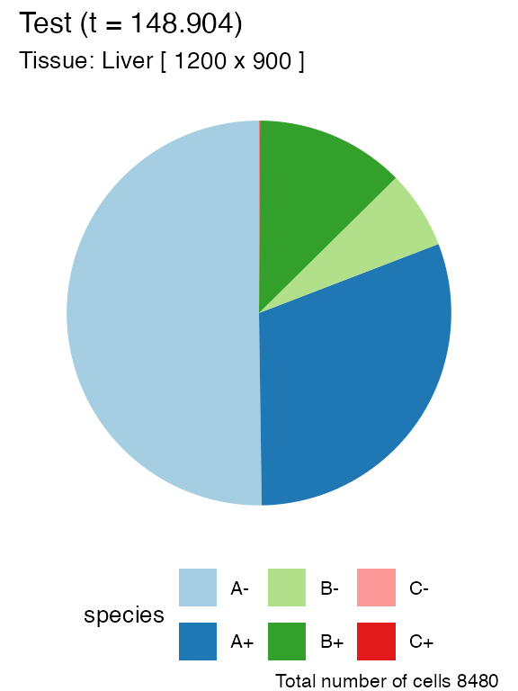
Custom time-series
If the default time-series is not enough coarse-grained, one can set
the Simulation property history_delta to
increase the sampling rate of the state (by default,
history_delta is set to \(0\)).
We show this by re-simulating a tumour with two submutants.
# Example time-series on a new simulation, with coarse-grained time-series
sim <- new(Simulation, "Finer Time Series")
sim$history_delta <- 1
sim$death_activation_level <- 100
# A
sim$add_mutant(name = "A",
epigenetic_rates = c("+-" = 0.01, "-+" = 0.01),
growth_rates = c("+" = 0.2, "-" = 0.08),
death_rates = c("+" = 0.1, "-" = 0.01))
sim$place_cell("A+", 500, 500)
sim$run_up_to_size("A+", 400)
# B (linear inside A)
sim$add_mutant(name = "B",
epigenetic_rates = c("+-" = 0.05, "-+" = 0.05),
growth_rates = c("+" = 0.3, "-" = 0.3),
death_rates = c("+" = 0.05, "-" = 0.1))
sim$mutate_progeny(sim$choose_cell_in("A"), "B")
sim$run_up_to_size("B-", 300)
# C (linear inside B)
sim$add_mutant(name = "C",
epigenetic_rates = c("+-" = 0.1, "-+" = 0.1),
growth_rates = c("+" = 0.2, "-" = 0.4),
death_rates = c("+" = 0.1, "-" = 0.01))
sim$mutate_progeny(sim$choose_cell_in("B"), "C")
# D (linear inside A, so branching with C) - same parameters of C
sim$add_mutant(name = "D",
epigenetic_rates = c("+-" = 0.1, "-+" = 0.1),
growth_rates = c("+" = 0.2, "-" = 0.4),
death_rates = c("+" = 0.1, "-" = 0.01))
sim$mutate_progeny(sim$choose_cell_in("A"), "D")
sim$run_up_to_size("D+", 1000)The time-series can be plot using plot_timeseries.
# Time-series plot
plot_timeseries(sim)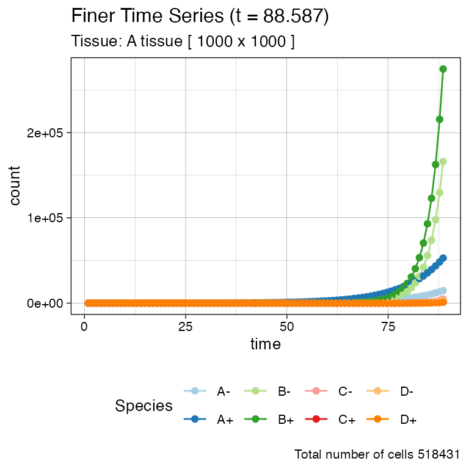
# Logscale helps seeing the different effective growth rates
plot_timeseries(sim) + ggplot2::scale_y_log10()
#> Warning: Transformation introduced infinite values in continuous y-axis
#> Transformation introduced infinite values in continuous y-axis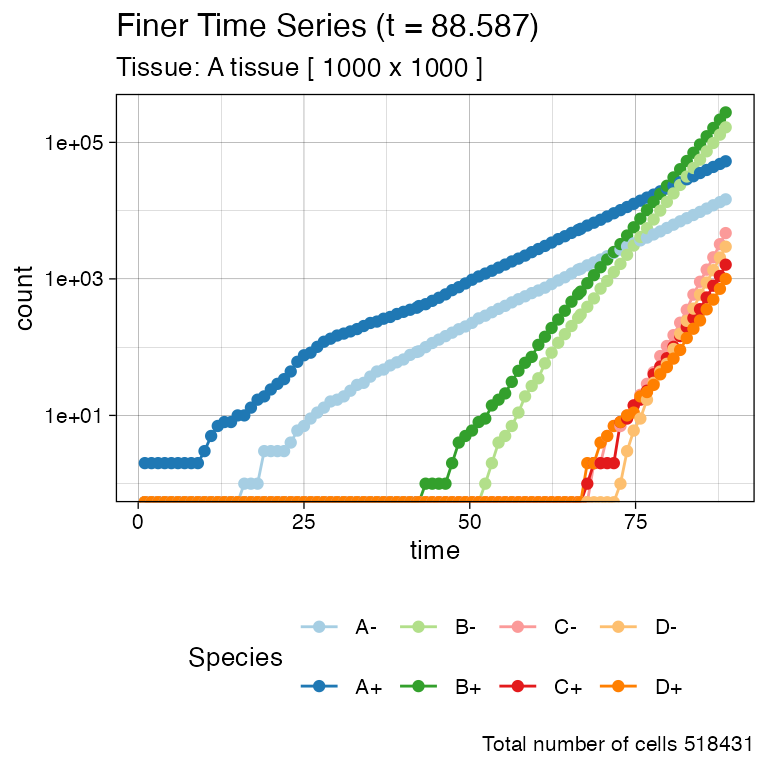
Muller plot
We can also get a Muller plot of the evolution using ggmuller.
# default Muller plot
plot_muller(sim)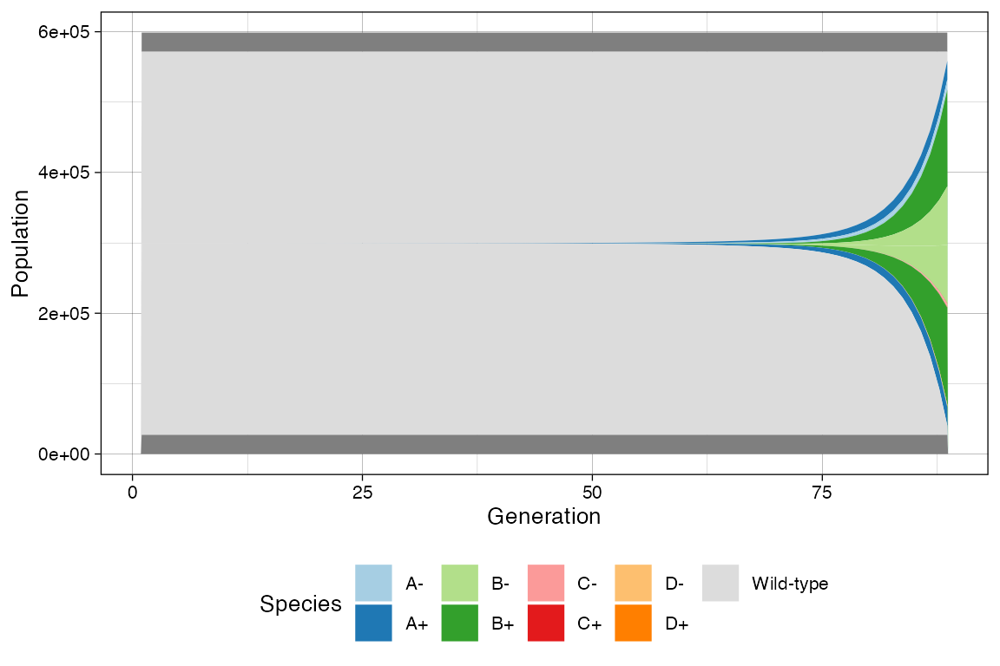
In this case every population is annotated as a descendant of the ancestor mutant. Note however that reversible espistates do not fit a traditional Muller plot because they violate the no-back mutation model.
In this case, rRACES will show first the epistate that was randomly injected in the simulation, and the second will result by linear. This is not a completely correct perspective of the simulation time-series; still, it help understand trends.
# Custom Mullers
clock <- sim$get_clock()
plot_muller(sim) + ggplot2::xlim(clock * 3/4, clock)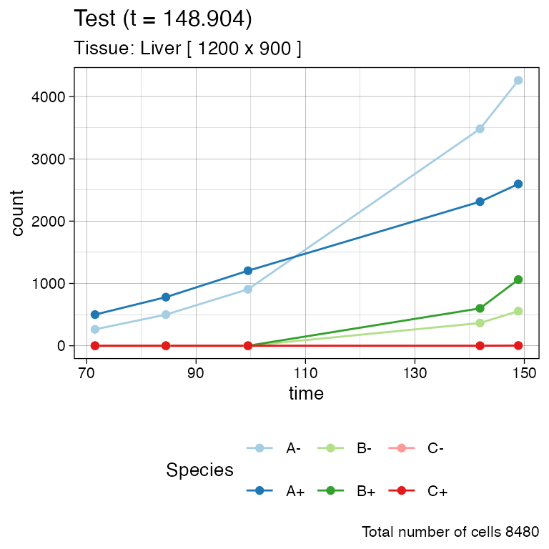
plot_muller(sim) +
ggplot2::xlim(clock * 3/4, clock) +
ggplot2::scale_y_log10()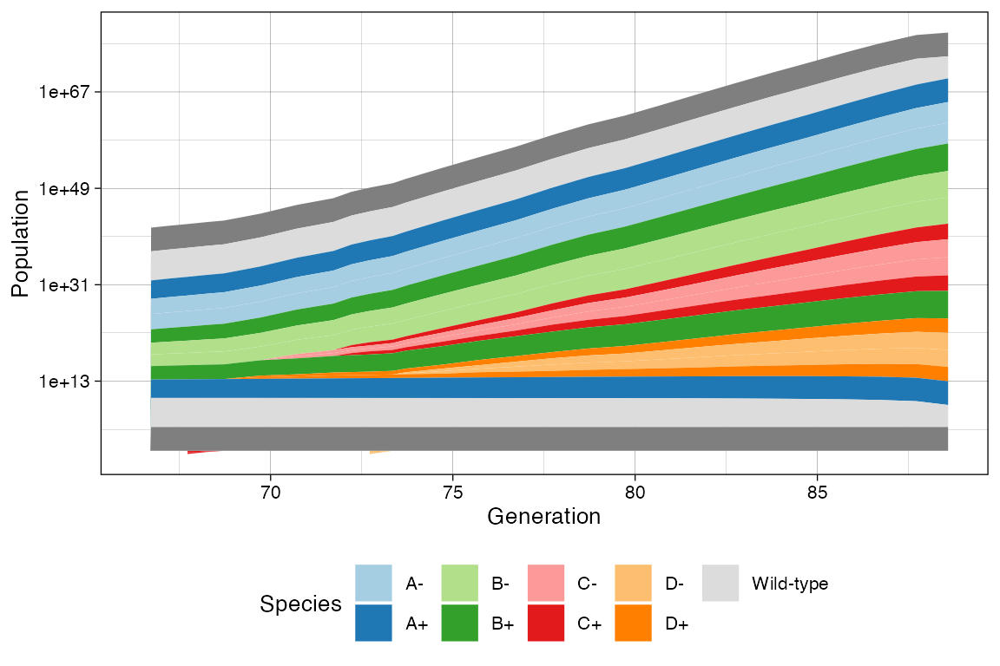
Time-varying evolutionary rates
You can model the fact that the rates of one species. For instance, this happens when a population is subject to a targeted treatment.
Considering the example above, where C and
D have the same rates, we increase the death rate of both
C+ and C- species, as well as B+
and B-.
# Current rates
sim
#>
#> ======= ==== ==== ==== ====== ==========
#> species λ δ ε counts %
#> ======= ==== ==== ==== ====== ==========
#> A- 0.08 0.01 0.01 14630 2.8219763
#> A+ 0.20 0.10 0.01 52828 10.1899771
#> B- 0.30 0.10 0.05 166090 32.0370503
#> B+ 0.30 0.05 0.05 274615 52.9704049
#> C- 0.40 0.01 0.10 4688 0.9042669
#> C+ 0.20 0.10 0.10 1615 0.3115169
#> D- 0.40 0.01 0.10 2965 0.5719180
#> D+ 0.20 0.10 0.10 1000 0.1928897
#> ======= ==== ==== ==== ====== ==========
#>
#> Species [A-]: 1303 (death), 12217 (growth) and 1337 (switches)
#> Species [A+]: 50520 (death), 107065 (growth) and 5053 (switches)
#> Species [B-]: 58335 (death), 204870 (growth) and 29272 (switches)
#> Species [B+]: 49200 (death), 343370 (growth) and 48827 (switches)
#> Species [C-]: 108 (death), 5510 (growth) and 1154 (switches)
#> Species [C+]: 398 (death), 1298 (growth) and 440 (switches)
#> Species [D-]: 72 (death), 3436 (growth) and 665 (switches)
#> Species [D+]: 249 (death), 849 (growth) and 266 (switches)
# Raise the death rate levels
sim$update_rates("B+", c(death = 3))
sim$update_rates("B-", c(death = 3))
sim$update_rates("C+", c(death = 3))
sim$update_rates("C-", c(death = 3))
# Now D will become larger
sim$run_up_to_size("D+", 6000)
# Current state
sim
#>
#> ======= ==== ==== ==== ====== ==========
#> species λ δ ε counts %
#> ======= ==== ==== ==== ====== ==========
#> A- 0.08 0.01 0.01 23112 17.7318132
#> A+ 0.20 0.10 0.01 82617 63.3847877
#> B- 0.30 3.00 0.05 5 0.0038361
#> B+ 0.30 3.00 0.05 3 0.0023016
#> C- 0.40 3.00 0.10 0 0.0000000
#> C+ 0.20 3.00 0.10 0 0.0000000
#> D- 0.40 0.01 0.10 18605 14.2739869
#> D+ 0.20 0.10 0.10 6000 4.6032745
#> ======= ==== ==== ==== ====== ==========
#>
#> Species [A-]: 2081 (death), 19381 (growth) and 2128 (switches)
#> Species [A+]: 79227 (death), 167657 (growth) and 7940 (switches)
#> Species [B-]: 248750 (death), 227181 (growth) and 32501 (switches)
#> Species [B+]: 357997 (death), 379574 (growth) and 54075 (switches)
#> Species [C-]: 5551 (death), 6398 (growth) and 1349 (switches)
#> Species [C+]: 2322 (death), 1474 (growth) and 502 (switches)
#> Species [D-]: 464 (death), 21983 (growth) and 4325 (switches)
#> Species [D+]: 1416 (death), 4501 (growth) and 1411 (switches)
# This now show the change in rates
clock <- sim$get_clock()
plot_muller(sim) + ggplot2::xlim(clock * 3/4, clock)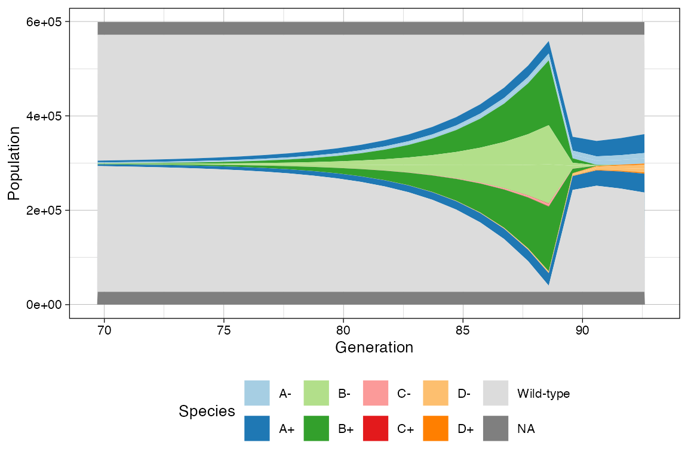
plot_muller(sim) +
ggplot2::xlim(clock * 3/4, clock) +
ggplot2::scale_y_log10()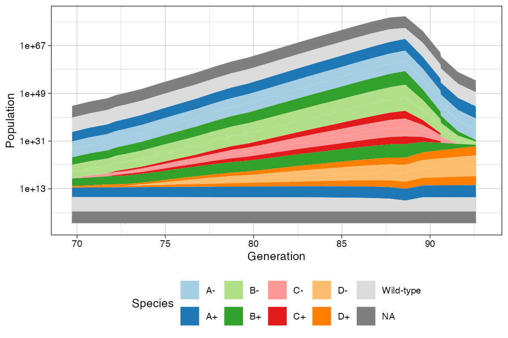